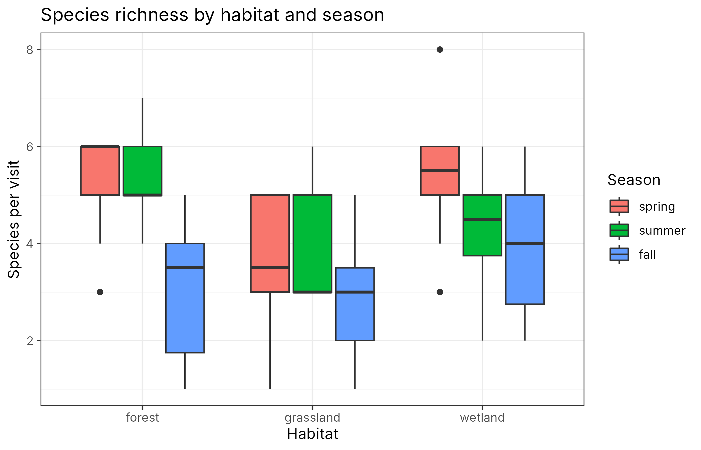
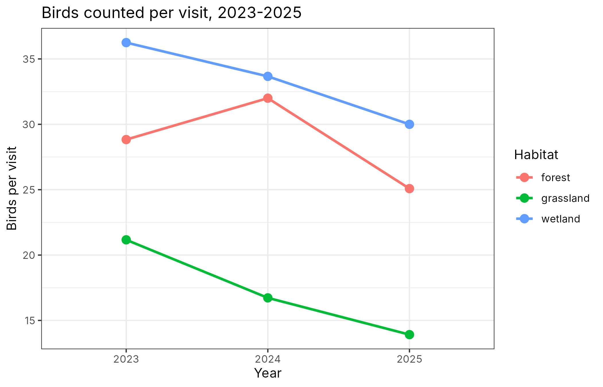
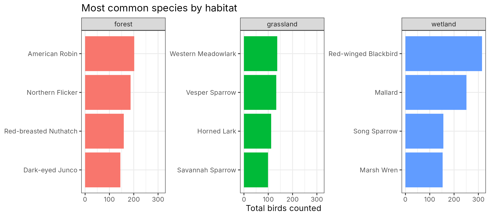
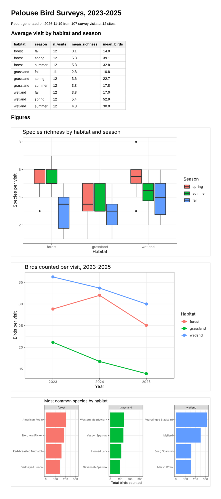

Three years (2023–2025) of bird point-count surveys from 12 sites on the Palouse: four forest, four grassland, and four wetland sites, each visited in spring, summer, and fall. Each row is one species seen on one visit, with how many birds were counted.
By the end you'll have a project that rebuilds every result from the raw data with a few commands:
bird_project/
├── data/
│ ├── raw/ downloaded data (never edited by hand)
│ └── clean/ data our scripts make
├── scripts/ one script per step
├── results/ tables and the HTML report
└── figures/ plotsThe pipeline
- Download the data with
curl(shell) - Combine the yearly files into one (shell)
- Summarize by habitat and season (R + dplyr)
- Plot the results (R + ggplot2)
- Report: write an HTML page with the tables and figures (R)
Some scripts have bugs planted on purpose, 8 in total. Copy each script exactly as written, run it, and fix what breaks.
- Read the first line of the error. It usually tells you what went wrong and where.
- Fix the first error first, then run again. One bug can hide the next.
- No error doesn't mean correct. Compare your output with the expected output on this page. Four of the bugs don't produce any error at all.
- Each bug has a Hint and a Solution. Give it a few minutes before you open them.
Every project gets its own folder, with the same layout every time. Start on your Desktop:
cd ~/Desktop # WSL: cd /mnt/c/Users/<your-username>/Desktop
mkdir -p bird_project/{data/raw,data/clean,scripts,results,figures}
cd bird_project
find . -type d.
./data
./data/clean
./data/raw
./figures
./results
./scriptsmkdir -p makes a folder and any parent folders it needs, without complaining if they already exist. The curly braces {a,b,c} are brace expansion: the shell turns one path into five.
Why run find?
It's a quick check that mkdir actually made what we wanted, before we build anything on top of it. Get in the habit of checking your work after every step: a typo in a folder name is easy to fix now, and much harder to track down later when a script can't find the folder (you'll see exactly that in Bug 7).
find searches a folder and everything inside it, all the way down. Piece by piece:
find: search for files and folders.: start here, in the current directory (bird_project/)-type d: only show directories (-type fwould show only files)
In the output, . is bird_project itself, and ./data/raw means the raw folder inside data. Your order may be different; that's fine.
ls only shows one level, so you'd see data but not the raw and clean folders inside it. find shows the whole tree at once. Try ls and compare. Later, once you've downloaded the data, try find . -type f to list every file in the project.
RStudio runs on Windows, so it can only open the project if it lives on your Windows drive. /mnt/c/Users/<you>/Desktop in Ubuntu is the same folder as C:\Users\<you>\Desktop in File Explorer. If your Desktop is synced to OneDrive, it's /mnt/c/Users/<you>/OneDrive/Desktop.
From here on, run every command from inside bird_project/. Check with pwd if you're not sure.
Instead of clicking a download link, we'll put the download in a script. Then anyone can get the exact same data by running one command. Create the script with nano:
nano scripts/01_download.shPaste this in, then save with Ctrl+O, Enter, and exit with Ctrl+X:
#!/bin/bash
# Download the bird survey data and unpack it into data/raw/
FILE="bird_survey.tar.gz"
URL="https://galaxy154.github.io/unix-r-project-day/data/$FILE"
cd data/raw
curl -LO "$URL"
tar -xzf "$FILE"
ls -lh bird_surveysRun it:
bash scripts/01_download.shYou should see something like this:
gzip: stdin: not in gzip format
tar: Child returned status 1
tar: Error is not recoverable: exiting now
ls: cannot access 'bird_surveys': No such file or directoryHint
curl did download something. Look at what it is:
head data/raw/bird_survey.tar.gzIs that a compressed file? Now compare the file name in the script with the link on the home page.
Solution
The file is called bird_surveys.tar.gz. The script asked for a file that doesn't exist, so the server sent back a "404 Not Found" web page, and curl saved that web page under the .tar.gz name anyway. tar then tried to unpack a web page.
FILE="bird_surveys.tar.gz"Delete the fake file and run it again:
rm data/raw/bird_survey.tar.gz
bash scripts/01_download.shLesson: a download can "succeed" and still give you garbage. curl -fLO (add -f) makes curl stop with an error on a bad link instead of saving the error page.
When it works, you'll see the four data files:
-rw-r--r-- 1 you you 423 sites.csv
-rw-r--r-- 1 you you 6.5K survey_2023.csv
-rw-r--r-- 1 you you 6.2K survey_2024.csv
-rw-r--r-- 1 you you 6.2K survey_2025.csvThe script runs in its own copy of the shell. Its cd only affects the script, so when it finishes you're still in bird_project/.
Before writing any analysis, use the shell to get to know the data. None of these commands change anything.
head -n 5 data/raw/bird_surveys/survey_2023.csv
wc -l data/raw/bird_surveys/*.csv
cat data/raw/bird_surveys/sites.csvdate,site_id,season,observer,species,count
2023-05-05,S01,spring,SK,Black-capped Chickadee,3
2023-05-05,S01,spring,SK,Northern Flicker,11
2023-05-05,S01,spring,SK,Steller's Jay,8
2023-05-05,S01,spring,SK,Red-breasted Nuthatch,9Which species were recorded most often? Pull out column 5, then count:
cut -d , -f 5 data/raw/bird_surveys/survey_*.csv | sort | uniq -c | sort -n | tail -n 5 27 Black-capped Chickadee
27 Western Meadowlark
33 Red-winged Blackbird
50 Song Sparrow
55 American Robin1. How many times was a Mallard recorded in each year? (Hint: grep -c)
2. Count the values in the season column (column 3) the same way. Does anything look odd? Write it down; it will matter later.
Answers
grep -c "Mallard" data/raw/bird_surveys/survey_*.csvdata/raw/bird_surveys/survey_2023.csv:7
data/raw/bird_surveys/survey_2024.csv:8
data/raw/bird_surveys/survey_2025.csv:7cut -d , -f 3 data/raw/bird_surveys/survey_*.csv | sort | uniq -c 40 Fall
59 Spring
48 Summer
74 fall
3 season
113 spring
114 summerSome seasons are capitalized and some aren't. To a computer, Spring and spring are different values. (The three season lines are the header from each file.)
The data comes as one file per year. Let's stack them into a single file for R:
nano scripts/02_combine.sh#!/bin/bash
# Combine the three yearly survey files into one file
mkdir -p data/clean
cat data/raw/bird_surveys/survey_*.csv > data/clean/all_surveys.csv
echo "Lines in combined file:"
wc -l data/clean/all_surveys.csv
echo "Header lines (should be 1):"
grep -c "^date" data/clean/all_surveys.csvbash scripts/02_combine.shNo error this time, but the script's own check fails:
Lines in combined file:
451 data/clean/all_surveys.csv
Header lines (should be 1):
3Hint
Each yearly file starts with its own header line. What does cat do with them? Look for yourself:
grep -n "^date" data/clean/all_surveys.csvSolution
cat just glues the files together, headers and all, so there's a header line in the middle of the data. R would read those as data rows and treat the count column as text. Keep the header from the first file only, then add the data rows from each file with tail -n +2 ("start at line 2"):
# Keep the header line from the first file only...
head -n 1 data/raw/bird_surveys/survey_2023.csv > data/clean/all_surveys.csv
# ...then add every file's data rows, skipping each header
for file in data/raw/bird_surveys/survey_*.csv
do
tail -n +2 "$file" >> data/clean/all_surveys.csv
doneNote the > on the first line (start a new file) versus >> in the loop (add to the end).
Correct output:
Lines in combined file:
449 data/clean/all_surveys.csv
Header lines (should be 1):
1Now switch to R. Make the folder an RStudio Project so R always starts in the right place:
- In RStudio: File → New Project → Existing Directory
- Browse to your
bird_projectfolder and click Create Project
Check that R is in the right place:
getwd() # should end in /bird_project
list.files() # data, figures, results, scripts, bird_project.Rprojsetwd("C:/Users/me/Desktop/...") only works on your computer. Inside a Project, every path is relative to the project folder, so the same scripts work on anyone's machine. That's what makes a project reproducible.
RStudio has a Terminal tab next to the Console. You can run the shell steps there too.
Create a new script (File → New File → R Script), paste this in, and save it as scripts/03_summarize.R. Then click Source to run the whole script.
# Summarize the bird surveys by habitat and season
library(dplyr)
surveys <- read.csv("data/clean/all_surveys.csv")
sites <- read.csv("data/raw/bird_surveys/sites.csv")
# Add each site's habitat to every survey row
birds <- left_join(surveys, sites, by = "site")
# One row per survey visit (one site on one date)
visits <- birds %>%
group_by(habitat, season, site_id, date) %>%
summarise(richness = n_distinct(species),
total_birds = sum(count),
.groups = "drop")
# Average visit by habitat and season
habitat_season <- visits %>%
group_by(habitat, season) %>%
summarise(n_visits = n(),
mean_richness = round(mean(richness), 1),
mean_birds = round(mean(total_birds), 1),
.groups = "drop")
print(habitat_season)
# Total count of each species in each habitat
species_totals <- birds %>%
group_by(habitat, species) %>%
summarise(total = sum(count), .groups = "drop") %>%
arrange(desc(total))
dir.create("results", showWarnings = FALSE)
write.csv(visits, "results/visits.csv", row.names = FALSE)
write.csv(habitat_season, "results/habitat_season_summary.csv", row.names = FALSE)
write.csv(species_totals, "results/species_totals.csv", row.names = FALSE)This script has three bugs. Fix them one at a time, and click Source again after each fix.
Error in `left_join()`:
! Join columns in `x` must be present in the data.
✖ Problem with `site`.Hint
The join needs a column with the same name in both tables. What are the columns actually called?
names(surveys)
names(sites)Solution
Both tables call it site_id, not site:
birds <- left_join(surveys, sites, by = "site_id")No error, but look at the mean_birds column of the printed table. Many values are NA.
Hint
One NA in a group makes sum() of that group NA. Are there any missing counts?
sum(is.na(surveys$count))Solution
Nine counts are missing from 2025 (the observer didn't record a number). Tell sum() to skip them by adding na.rm = TRUE, in both places sum(count) is used. First, in the visits block near the top:
visits <- birds %>%
group_by(habitat, season, site_id, date) %>%
summarise(richness = n_distinct(species),
total_birds = sum(count, na.rm = TRUE),
.groups = "drop")And in the species totals block near the bottom. Keep the %>% at the end of the summarise() line, or arrange() gets cut off from the pipe:
species_totals <- birds %>%
group_by(habitat, species) %>%
summarise(total = sum(count, na.rm = TRUE), .groups = "drop") %>%
arrange(desc(total))Think about it: is ignoring missing counts the right call? Here it slightly undercounts nine visits. In a real study you'd decide this on purpose and write it down.
No error, but the table should have 9 rows (3 habitats × 3 seasons). Yours has 18. Look at the season column.
Hint
Remember what you found in Step 3?
table(surveys$season)Solution
The 2024 file wrote Spring, Summer, Fall with capital letters, so R treats them as different seasons. Make them all lowercase right after the join:
birds <- left_join(surveys, sites, by = "site_id")
# Make season names consistent (2024 used "Spring" instead of "spring")
birds <- birds %>%
mutate(season = tolower(season))Lesson: fix messy data in a script, never by hand in the raw file. That way the fix is written down and runs every time.
When all three are fixed, the printed table looks like this, and three CSV files appear in results/:
# A tibble: 9 × 5
habitat season n_visits mean_richness mean_birds
<chr> <chr> <int> <dbl> <dbl>
1 forest fall 12 3.1 14
2 forest spring 12 5.3 39.1
3 forest summer 12 5.3 32.8
4 grassland fall 11 2.8 10.8
5 grassland spring 12 3.6 22.7
6 grassland summer 12 3.8 17.8
7 wetland fall 12 3.8 17
8 wetland spring 12 5.4 52.9
9 wetland summer 12 4.3 30Then count was read as text, which means the extra header lines are still in all_surveys.csv. Go back and fix Bug 2, rerun bash scripts/02_combine.sh, then Source this script again. A bug in one step can show up as an error in a later one.
On one fall visit to a grassland site, no birds were seen at all, so that visit has no rows in the data. Real data has quirks like this.
Save this as scripts/04_figures.R and click Source:
# Make figures from the summary tables
library(dplyr)
library(ggplot2)
fig_dir <- "figure"
visits <- read.csv("results/visits.csv")
species_totals <- read.csv("results/species_totals.csv")
visits$season <- factor(visits$season, levels = c("spring", "summer", "fall"))
visits$year <- substr(visits$date, 1, 4)
# Figure 1: species richness by habitat and season
p1 <- ggplot(visits, aes(x = habitat, y = richness, fill = season))
+ geom_boxplot()
+ labs(x = "Habitat", y = "Species per visit", fill = "Season",
title = "Species richness by habitat and season")
+ theme_bw()
ggsave(file.path(fig_dir, "fig1_richness.png"), p1, width = 7, height = 4.5)
# Figure 2: birds counted per visit, by year
yearly <- visits %>%
group_by(habitat, year) %>%
summarise(mean_birds = mean(total_birds), .groups = "drop")
p2 <- ggplot(yearly, aes(x = year, y = mean_birds, color = habitat, group = habitat)) +
geom_line(linewidth = 1) +
geom_point(size = 3) +
labs(x = "Year", y = "Birds per visit", color = "Habitat",
title = "Birds counted per visit, 2023-2025") +
theme_bw()
ggsave(file.path(fig_dir, "fig2_birds_by_year.png"), p2, width = 7, height = 4.5)
# Figure 3: most common species in each habitat
top_species <- species_totals %>%
group_by(habitat) %>%
slice_max(total, n = 4)
p3 <- ggplot(top_species, aes(x = reorder(species, total), y = total, fill = habitat)) +
geom_col() +
coord_flip() +
facet_wrap(~ habitat, scales = "free_y") +
labs(x = NULL, y = "Total birds counted", title = "Most common species by habitat") +
theme_bw() +
theme(legend.position = "none")
ggsave(file.path(fig_dir, "fig3_top_species.png"), p3, width = 9, height = 4)Error in `+.gg`:
! Cannot use `+` with a single argument
ℹ Did you accidentally put `+` on a new line?Hint
The error message practically answers the question. In R, when does a line of code end?
Solution
R runs a line as soon as it's complete. p1 <- ggplot(...) is already complete, so R stops there and then finds a line starting with +. The + has to go at the end of a line, so R knows more is coming:
p1 <- ggplot(visits, aes(x = habitat, y = richness, fill = season)) +
geom_boxplot() +
labs(x = "Habitat", y = "Species per visit", fill = "Season",
title = "Species richness by habitat and season") +
theme_bw()With current versions of ggplot2 you'll see:
Error in `ggsave()`:
! Cannot find directory figure.
ℹ Please supply an existing directory or use `create.dir = TRUE`.With older versions there's no error. Instead, check list.files(): did the plots end up somewhere unexpected?
Hint
Which folder did you make in Step 1? Which folder does the script save to?
Solution
The folder is figures, with an s. Because the folder name is stored in one variable, it's a one-line fix:
fig_dir <- "figures"If an older ggplot2 created a stray figure/ folder, delete it.
You should now have three figures in figures/:



Which habitat has the most species per visit? Which season? What's happening to grassland birds from 2023 to 2025?
Last step: an R script that writes an HTML page with the summary table and the figures. HTML is just text, so R can write it with writeLines(). Save this as scripts/05_report.R and Source it:
# Write a simple HTML report that shows the tables and figures
summary_table <- read.csv("results/habitat_season_summary.csv")
visits <- read.csv("results/visits.csv")
# Turn a data frame into an HTML table
to_html_table <- function(df) {
header <- paste0("<tr>", paste0("<th>", names(df), "</th>", collapse = ""), "</tr>")
rows <- apply(df, 1, function(r) {
paste0("<tr>", paste0("<td>", r, "</td>", collapse = ""), "</tr>")
})
c("<table>", header, rows, "</table>")
}
html <- c(
"<!DOCTYPE html>",
"<html><head><meta charset='utf-8'><title>Palouse Bird Surveys</title>",
"<style>",
" body { font-family: Arial, sans-serif; max-width: 900px; margin: 40px auto; }",
" table { border-collapse: collapse; margin: 16px 0; }",
" th, td { border: 1px solid #ccc; padding: 6px 12px; text-align: left; }",
" th { background: #f2f2f2; }",
" img { max-width: 100%; margin: 12px 0; border: 1px solid #ddd; }",
"</style></head><body>",
"<h1>Palouse Bird Surveys, 2023-2025</h1>",
paste0("<p>Report generated on ", Sys.Date(), " from ", nrow(visits),
" survey visits at ", length(unique(visits$site_id)), " sites.</p>"),
"<h2>Average visit by habitat and season</h2>",
to_html_table(summary_table),
"<h2>Figures</h2>",
"<img src='figures/fig1_richness.png' alt='Species richness by habitat and season'>",
"<img src='figures/fig2_birds_by_year.png' alt='Birds per visit by year'>",
"<img src='figures/fig3_top_species.png' alt='Most common species by habitat'>",
"</body></html>"
)
writeLines(html, "results/report.html")
cat("Report written to results/report.html\n")Open results/report.html in your web browser: double-click it in Finder or File Explorer, or click it in RStudio's Files pane and choose View in Web Browser.
The script runs without errors and the table shows up, but every figure is a broken image.
Hint
Paths inside an HTML file are relative to where the HTML file is. Where is report.html? Where are the figures? From inside results/, how would you get to figures/?
Solution
The report lives in results/, so figures/fig1_richness.png points to results/figures/, which doesn't exist. Go up one level first with .., the same as cd .. in the shell:
"<img src='../figures/fig1_richness.png' alt='Species richness by habitat and season'>",
"<img src='../figures/fig2_birds_by_year.png' alt='Birds per visit by year'>",
"<img src='../figures/fig3_top_species.png' alt='Most common species by habitat'>",Lesson: a silent bug. Nothing errors; you only catch it by looking at the result.
Fixed, your report looks like this:

The real test of a reproducible project: delete everything the scripts made, and rebuild it. First, a script that runs all the R steps in order. Save as scripts/run_all.R:
# Re-run every R step, in order
source("scripts/03_summarize.R")
source("scripts/04_figures.R")
source("scripts/05_report.R")In the terminal, from bird_project/, delete all the outputs and rebuild the clean data:
rm -r data/clean/* results/* figures/*
bash scripts/02_combine.shThen in RStudio, restart R (Session → Restart R) and run:
source("scripts/run_all.R")Open results/report.html again. If it looks the same as before, your project is reproducible: anyone with your scripts can rebuild every table and figure from the original download.
There's no recycle bin in the shell. That's fine here, because everything we deleted can be rebuilt by the scripts. That's exactly the point: never keep the only copy of something in results/ or figures/.
If Rscript works in your terminal, you can run the whole pipeline at once: bash scripts/01_download.sh && bash scripts/02_combine.sh && Rscript scripts/run_all.R. The && means "only keep going if the last step worked."
Use AI to add to your project. For each one, read the code before you run it, and check the result.
Add a fourth figure
Check: does the figure show up in the report? Did the AI get the image path right (remember Bug 8)?
Write the README
Save it as README.md in bird_project/. Check: are the commands it lists exactly right? Try them.
Ask about a bug you fixed
If you've done the Git lesson, put your project under version control. The scripts are what matter; the outputs can always be rebuilt.
git init
git add scripts/ README.md
git commit -m "Bird survey pipeline: download to HTML report"Four of the eight bugs gave no error at all. Those are the dangerous ones in real research, because you only catch them by checking your results.
Show the recap (after you've finished!)
| # | Script | Symptom | Lesson |
|---|---|---|---|
| 1 | 01_download.sh | tar: not in gzip format | A download can succeed and still be wrong. Look at what you got. |
| 2 | 02_combine.sh | No error; 3 header lines | cat keeps every header. Check your output, not just for errors. |
| 3 | 03_summarize.R | left_join() can't find site | Check real column names with names(). |
| 4 | 03_summarize.R | No error; NA results | Missing values spread. Decide how to handle them on purpose. |
| 5 | 03_summarize.R | No error; 18 rows instead of 9 | Spring ≠ spring. Clean data in code, not by hand. |
| 6 | 04_figures.R | Cannot use + with a single argument | In ggplot2, + goes at the end of the line. |
| 7 | 04_figures.R | Cannot find directory figure | Typos in paths. Storing a path in one variable makes it a one-line fix. |
| 8 | 05_report.R | No error; broken images | Relative paths start from the file's own location. |